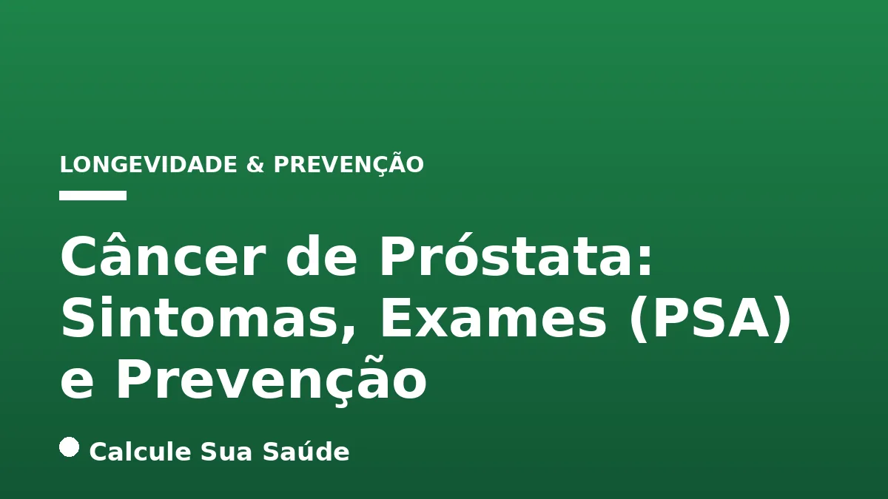

Aviso médico importante
Este conteúdo é educativo e informativo e não substitui a consulta, o diagnóstico ou o tratamento de um profissional de saúde. Em caso de sintomas, procure orientação médica.
Índice do Artigo
- 1. O Que é o Câncer de Próstata?
- 2. Epidemiologia do Câncer de Próstata no Brasil
- 3. Fatores de Risco para o Câncer de Próstata
- 4. Sintomas do Câncer de Próstata: Quando Ficar Alerta
- 5. Diagnóstico do Câncer de Próstata: Exames e Abordagens
- 6. Rastreamento Populacional vs. Detecção Precoce Individualizada
- 7. Prevenção do Câncer de Próstata: Hábitos Saudáveis
- 8. Opções de Tratamento para o Câncer de Próstata
- 9. Força de Evidência e Diretrizes de Tratamento
- 10. Mitos Comuns e a Realidade Científica sobre o Câncer de Próstata
- 11. A Importância do Acompanhamento Médico e da Decisão Compartilhada
- 12. Conclusão: Conhecimento e Cuidado para a Saúde Prostática
- 13. Perguntas frequentes
O câncer de próstata representa uma das maiores preocupações na saúde masculina globalmente e, particularmente, no Brasil. Sendo o segundo tipo de câncer mais incidente entre os homens, excluindo o câncer de pele não melanoma, sua compreensão aprofundada é crucial para a detecção precoce e o manejo adequado. Este artigo, fundamentado em evidências científicas e diretrizes de órgãos de saúde renomados, visa desmistificar aspectos da doença, desde sua definição e fatores de risco até os métodos diagnósticos, como o exame de Antígeno Prostático Específico (PSA), e as estratégias de prevenção e tratamento.
A próstata, uma pequena glândula localizada abaixo da bexiga masculina, desempenha um papel vital na reprodução. No entanto, com o avanço da idade, ela se torna suscetível a alterações, incluindo o desenvolvimento de células cancerígenas. Embora muitos casos de câncer de próstata progridam lentamente e possam não representar uma ameaça imediata à vida, outros são agressivos e exigem intervenção rápida. A chave reside na informação qualificada e na tomada de decisões conscientes, em conjunto com profissionais de saúde.
Neste guia completo, exploraremos os sintomas que podem indicar a presença da doença, a complexidade do diagnóstico que envolve o PSA e o toque retal, as recomendações atuais sobre rastreamento e detecção precoce, e as abordagens preventivas baseadas em estilo de vida. Abordaremos também os tratamentos disponíveis e desvendaremos mitos comuns, sempre com o objetivo de empoderar os homens com conhecimento para cuidar de sua saúde prostática de forma proativa e informada.
Em resumo
- O câncer de próstata é o segundo câncer mais comum em homens no Brasil, com alta incidência após os 50 anos e fatores de risco como idade, histórico familiar e etnia.
- Na fase inicial, a doença é frequentemente assintomática. Sintomas urinários e dor óssea geralmente indicam estágios avançados.
- O diagnóstico envolve o exame de PSA e o toque retal, mas a biópsia é a única forma de confirmação. Exames de imagem avançados auxiliam na investigação.
- Ministério da Saúde, INCA e OMS não recomendam rastreamento populacional, mas sim a detecção precoce individualizada, com decisão compartilhada entre médico e paciente.
- A prevenção primária foca em hábitos saudáveis: dieta equilibrada, peso adequado, atividade física regular e abstenção de tabaco e álcool.
- As opções de tratamento variam de vigilância ativa para tumores de baixa agressividade a cirurgia, radioterapia, terapias hormonais e quimioterapia para casos mais avançados.
1. O Que é o Câncer de Próstata?
O câncer de próstata é uma neoplasia maligna que se origina nas células da próstata, uma glândula exclusiva do sistema reprodutor masculino. Localizada logo abaixo da bexiga e à frente do reto, a próstata envolve a parte superior da uretra, canal por onde a urina e o sêmen são eliminados. Sua principal função é produzir um líquido que compõe parte do sêmen, essencial para a nutrição e proteção dos espermatozoides. Em homens jovens, a próstata tem o tamanho aproximado de uma ameixa, mas tende a aumentar naturalmente com a idade, condição conhecida como hiperplasia prostática benigna (HPB), que não é câncer.
A maioria dos casos de câncer de próstata, especialmente o tipo mais comum, o adenocarcinoma, que se desenvolve a partir das células glandulares, cresce de forma lenta. Muitos homens podem viver com a doença por anos sem que ela cause sintomas ou ameace sua saúde. No entanto, uma parcela dos casos pode ser mais agressiva, progredindo rapidamente e se espalhando para outros órgãos do corpo, um processo conhecido como metástase, o que pode ser fatal. A distinção entre essas formas da doença é crucial para a definição do manejo e tratamento.
2. Epidemiologia do Câncer de Próstata no Brasil
No cenário brasileiro, o câncer de próstata se destaca como um grave problema de saúde pública. Ele é o segundo tipo de câncer mais comum entre os homens, ficando atrás apenas do câncer de pele não melanoma. Quando consideramos ambos os sexos, ele também ocupa a segunda posição em termos de incidência. Esses dados ressaltam a importância de campanhas de conscientização e acesso a informações e serviços de saúde.
O Instituto Nacional de Câncer (INCA) estima que, para o triênio 2023-2025, o Brasil registrará cerca de 71.730 novos casos de câncer de próstata por ano. Isso corresponde a um risco estimado de 67,86 casos para cada 100 mil homens. A mortalidade também é um aspecto preocupante: em 2021, a doença foi responsável por 16.301 mortes no país, consolidando-se como a segunda maior causa de óbito por câncer entre os homens. A taxa de mortalidade tem apresentado um crescimento contínuo no Brasil, com um aumento notável entre 2013 e 2019.
As estimativas epidemiológicas também revelam profundas desigualdades regionais. A região Sudeste, por exemplo, concentra mais de 34 mil casos anuais, seguida pelo Nordeste, com aproximadamente 21 mil. Estados como Bahia e Espírito Santo apresentam as maiores taxas de incidência, com 79 e 72 casos a cada 100 mil homens, respectivamente. O Sudeste também registra as maiores taxas de mortalidade, enquanto o Norte apresenta os menores índices. Essas disparidades geográficas sugerem que o acesso ao diagnóstico precoce e a tratamentos adequados pode ser um fator determinante na sobrevida e qualidade de vida dos pacientes em diferentes partes do país, ressaltando a necessidade de políticas públicas que visem a equidade em saúde.
3. Fatores de Risco para o Câncer de Próstata
Embora as causas exatas do câncer de próstata ainda não sejam completamente elucidadas, diversos fatores de risco foram consistentemente associados ao seu desenvolvimento. A compreensão desses fatores é fundamental para a avaliação individualizada e a adoção de estratégias preventivas.
Idade
A idade é o fator de risco mais significativo para o câncer de próstata. É amplamente considerado um câncer da terceira idade, com cerca de 75% dos casos no mundo ocorrendo a partir dos 65 anos. A incidência da doença aumenta consideravelmente após os 50 anos. Embora menos frequentes, casos diagnosticados antes dos 50 anos podem, por vezes, apresentar formas mais agressivas da doença e podem indicar uma predisposição hereditária.
Histórico Familiar e Genética
Homens com histórico familiar de câncer de próstata, especialmente em parentes de primeiro grau (pai ou irmão), têm um risco significativamente maior de desenvolver a doença. A presença de um parente de primeiro grau com a doença pode duplicar a chance, e dois familiares aumentam essa probabilidade em até cinco vezes. Além disso, mutações genéticas específicas, como as nos genes BRCA1 e BRCA2 (mais conhecidas por sua associação com câncer de mama e ovário), também estão associadas a uma maior probabilidade de câncer de próstata, muitas vezes com início mais precoce e maior agressividade.
Etnia
A etnia é outro fator de risco importante. Homens negros, por exemplo, apresentam uma maior chance de desenvolver câncer de próstata e, em muitos casos, podem manifestar formas mais agressivas da doença. Acredita-se que essa disparidade se deva a uma combinação de fatores, incluindo predisposição genética e desigualdades socioeconômicas que afetam o acesso a exames de rastreamento e cuidados médicos de qualidade.
Hábitos Alimentares e Estilo de Vida
O estilo de vida desempenha um papel crucial na modulação do risco de diversas doenças crônicas, incluindo o câncer de próstata. Embora não sejam causas diretas, certos hábitos podem influenciar o surgimento e a progressão da doença:
- Dieta: O consumo excessivo de gordura animal, carnes processadas e a baixa ingestão de vegetais, frutas e peixes têm sido associados a um risco aumentado. Uma dieta rica em alimentos ultraprocessados, por exemplo, pode contribuir para inflamação sistêmica e desequilíbrios metabólicos que favorecem o desenvolvimento do câncer. Para mais informações sobre os riscos de alimentos processados, veja nosso artigo sobre Alimentos Ultraprocessados: Riscos e Identificação.
- Peso Corporal: Manter um peso corporal adequado é um fator preventivo. O sedentarismo e a obesidade estão relacionados a alterações metabólicas, como a resistência à insulina e inflamação crônica, que podem levar a modificações moleculares responsáveis pela gênese da neoplasia. A gordura visceral, em particular, é um fator de risco metabólico significativo; saiba mais em Gordura Visceral: Perigos e Estratégias de Redução.
- Tabagismo e Álcool: Não fumar e evitar o consumo excessivo de bebidas alcoólicas são medidas preventivas importantes. O tabagismo é um fator de risco para diversos tipos de câncer, e o álcool, em excesso, pode prejudicar a saúde geral e aumentar o risco de doenças hepáticas, como abordado em Álcool e Fígado: Da Esteatose à Cirrose.
4. Sintomas do Câncer de Próstata: Quando Ficar Alerta
Uma das características mais desafiadoras do câncer de próstata é sua natureza frequentemente assintomática nas fases iniciais. Isso significa que a doença pode se desenvolver silenciosamente, sem que o homem perceba qualquer alteração em sua saúde. Quando os sintomas aparecem, eles podem ser inespecíficos e semelhantes aos de condições benignas da próstata, como a hiperplasia benigna da próstata (HPB) ou a prostatite (inflamação da glândula), o que pode dificultar o diagnóstico diferencial sem avaliação médica.
Sintomas Urinários e Sexuais
Os sintomas mais comuns, que geralmente indicam um estágio mais avançado da doença ou um crescimento significativo do tumor que comprime a uretra, incluem:
- Dificuldade para iniciar a micção (jato de urina fraco ou interrompido).
- Demora em começar e terminar de urinar.
- Diminuição da força e calibre do jato de urina.
- Necessidade de urinar mais vezes durante o dia ou à noite (nictúria).
- Sensação de não esvaziamento completo da bexiga após urinar.
- Presença de sangue na urina (hematúria) ou no sêmen (hematospermia), embora menos comum, são sinais de alerta.
- Dificuldade para ter ereção (disfunção erétil), que pode ser um sintoma tardio.
Sintomas em Estágios Avançados (Metástase)
Em fases mais avançadas, quando o câncer se espalhou para outras partes do corpo (metástase), os sintomas podem ser mais sistêmicos e graves. As áreas mais comuns de metástase são os ossos, especialmente a coluna, quadris e costelas. Nesses casos, podem ocorrer:
- Dor óssea persistente, que não melhora com repouso, principalmente na coluna, quadris ou costelas.
- Perda de peso inexplicável e cansaço excessivo. O cansaço pode ser um sintoma de diversas condições, incluindo Anemia Ferropriva: Sinais e Diagnóstico, que pode ocorrer em estágios avançados de câncer.
- Fraqueza ou dormência nas pernas ou pés, que pode indicar compressão da medula espinhal devido a metástase óssea.
- Insuficiência renal, caso o tumor obstrua os ureteres e impeça o fluxo de urina dos rins para a bexiga. A hidratação adequada é fundamental para a saúde renal, como discutido em Hidratação e Pedras nos Rins: Prevenção.
É crucial ressaltar que a presença de um ou mais desses sintomas não confirma o diagnóstico de câncer de próstata, mas exige uma avaliação médica imediata. Apenas um profissional de saúde pode investigar a causa e propor os exames necessários.
5. Diagnóstico do Câncer de Próstata: Exames e Abordagens
O diagnóstico do câncer de próstata é um processo multifacetado que combina a avaliação clínica com exames laboratoriais e de imagem. A biópsia é o único método que pode confirmar a presença de células cancerígenas. A abordagem diagnóstica deve ser cuidadosa e individualizada, considerando os riscos e benefícios de cada etapa.
Exame de Antígeno Prostático Específico (PSA)
O PSA é uma proteína produzida exclusivamente pelas células da próstata, tanto normais quanto cancerosas. O exame de PSA mede a quantidade dessa proteína no sangue. Níveis elevados de PSA podem ser um indicativo de câncer de próstata, mas é fundamental compreender que o PSA não é um marcador exclusivo para o câncer. Outras condições benignas podem elevar seus níveis, incluindo:
- Hiperplasia Prostática Benigna (HPB): O aumento benigno da próstata, comum com o envelhecimento.
- Prostatite: Inflamação ou infecção da próstata.
- Infecção urinária: Pode causar elevação temporária do PSA.
- Ejaculação recente: Pode elevar o PSA por até 48 horas.
- Manipulação urológica: Procedimentos como biópsia ou cistoscopia podem aumentar o PSA.
É importante notar que, em aproximadamente 15% dos homens com câncer de próstata, os níveis de PSA podem estar dentro da faixa considerada normal, o que reforça a necessidade de uma avaliação clínica completa e, muitas vezes, de exames complementares.
Toque Retal
O toque retal é um exame físico simples e rápido, realizado pelo médico, no qual ele palpa a próstata através do reto. Este exame permite ao profissional avaliar o tamanho, a forma, a consistência e a presença de nódulos ou áreas endurecidas na glândula. Embora possa ser desconfortável para alguns, é um componente essencial da avaliação, pois pode detectar alterações sugestivas de câncer mesmo em homens com níveis normais de PSA.
Biópsia de Próstata
Quando há alterações significativas no PSA, no toque retal ou em exames de imagem, a biópsia de próstata é indicada. Este é o único exame capaz de confirmar o diagnóstico de câncer. Durante a biópsia, pequenas amostras de tecido da próstata são retiradas com uma agulha fina, geralmente guiada por ultrassom transretal, e enviadas para análise histopatológica. O patologista examinará as amostras para determinar a presença de células cancerígenas, o tipo de câncer e seu grau de agressividade (escore de Gleason).
Exames de Imagem Avançados
A tecnologia de imagem tem revolucionado o diagnóstico do câncer de próstata. A ressonância magnética multiparamétrica (RMmp) da próstata é frequentemente realizada antes da biópsia em homens com risco elevado, pois pode identificar áreas suspeitas com maior precisão, direcionando a biópsia e reduzindo a necessidade de biópsias aleatórias. Outras técnicas avançadas, como a tomografia por emissão de pósitrons com PSMA (PSMA-PET), são utilizadas para estadiamento da doença, especialmente em casos de suspeita de metástase, oferecendo uma visão detalhada da extensão do câncer no corpo.
6. Rastreamento Populacional vs. Detecção Precoce Individualizada
A discussão sobre o rastreamento do câncer de próstata é complexa e tem evoluído significativamente com base em novas evidências científicas. É fundamental distinguir entre rastreamento populacional e detecção precoce individualizada.
Rastreamento Populacional: A Posição das Autoridades de Saúde
O Ministério da Saúde do Brasil, o Instituto Nacional de Câncer (INCA) e a Organização Mundial da Saúde (OMS) **não recomendam o rastreamento populacional** para o câncer de próstata. O rastreamento populacional refere-se à realização de exames de rotina (como PSA e toque retal) em homens assintomáticos de uma determinada faixa etária, sem considerar fatores de risco individuais. Essa posição é embasada na falta de evidências claras de que o rastreamento em massa reduza de forma significativa a mortalidade específica pela doença em toda a população, e nos riscos associados a essa prática.
Riscos do Rastreamento em Massa
Os principais riscos do rastreamento populacional incluem:
- Falsos Positivos: Níveis elevados de PSA podem levar a biópsias desnecessárias, que carregam riscos de infecção, sangramento e ansiedade.
- Sobrediagnóstico: Detecção de cânceres de próstata que crescem tão lentamente que nunca causariam sintomas ou ameaçariam a vida do homem. Esses cânceres, se não tratados, não causariam dano.
- Sobretratamento: Homens diagnosticados com cânceres de baixa agressividade, que poderiam ser apenas monitorados (vigilância ativa), acabam sendo submetidos a tratamentos invasivos como cirurgia ou radioterapia. O sobretratamento pode levar a danos significativos na qualidade de vida, incluindo problemas psicológicos, incontinência urinária e impotência sexual, sem um benefício claro na sobrevida.
Detecção Precoce Individualizada: A Abordagem Recomendada
A recomendação atual é para a **detecção precoce individualizada**. Isso significa que a decisão de realizar exames como PSA e toque retal deve ser tomada em conjunto pelo homem e seu médico, após uma discussão informada sobre os potenciais benefícios e riscos. Essa conversa deve levar em conta os fatores de risco individuais do paciente, como histórico familiar de câncer de próstata e etnia. Para homens com fatores de risco significativos, o acompanhamento pode ser sugerido a partir dos 45 anos; para a população geral, algumas sociedades médicas indicam a partir dos 50 anos.
Essa abordagem permite que cada homem, com o apoio de seu médico, avalie sua situação particular, compreenda as implicações dos exames e decida o melhor caminho a seguir, priorizando sua saúde e bem-estar, e evitando intervenções desnecessárias que possam comprometer sua qualidade de vida.
7. Prevenção do Câncer de Próstata: Hábitos Saudáveis
Até o momento, a ciência não identificou formas específicas ou garantidas para prevenir o câncer de próstata. Não existem vacinas ou medicamentos que eliminem completamente o risco de desenvolver a doença. No entanto, a adoção de um estilo de vida saudável é a estratégia mais eficaz e comprovada para reduzir o risco de diversas doenças crônicas, incluindo o câncer de próstata, e para promover a saúde geral e a longevidade.
Estratégias de Prevenção Baseadas em Estilo de Vida
As recomendações para a prevenção primária do câncer de próstata e de outras neoplasias são amplamente baseadas em hábitos saudáveis:
- Alimentação Saudável: Uma dieta rica em frutas, vegetais, grãos integrais e peixes, e pobre em carnes vermelhas, carnes processadas e gorduras saturadas, é fundamental. Alimentos ricos em antioxidantes, como licopeno (presente no tomate), selênio e vitamina E, têm sido estudados por seu potencial protetor, embora os resultados ainda não sejam conclusivos para a suplementação isolada. A Dieta Mediterrânea: A Mais Recomendada para a Saúde é um excelente exemplo de padrão alimentar protetor. O consumo adequado de Fibras Alimentares: Tipos, Quantidade e Impacto na Saúde também é benéfico.
- Manutenção do Peso Corporal Adequado: A obesidade e o sobrepeso estão associados a um risco aumentado de câncer de próstata agressivo. Manter um peso saudável através da combinação de dieta e exercício físico ajuda a regular hormônios e reduzir a inflamação, fatores que podem influenciar o desenvolvimento do câncer.
- Prática Regular de Atividade Física: A atividade física regular não só ajuda a manter o peso, mas também melhora a função imunológica e reduz a inflamação. Recomenda-se pelo menos 150 minutos de atividade aeróbica de intensidade moderada ou 75 minutos de intensidade vigorosa por semana, além de exercícios de força. Para entender os benefícios de diferentes tipos de exercícios, confira nosso artigo sobre HIIT vs Aeróbico: Mitocôndria e Saúde.
- Não Fumar: O tabagismo é um fator de risco bem estabelecido para muitos tipos de câncer, incluindo o de próstata, e está associado a formas mais agressivas da doença. Parar de fumar ou nunca começar é uma das melhores decisões para a saúde.
- Evitar o Consumo Excessivo de Bebidas Alcoólicas: O consumo moderado de álcool pode não ser diretamente ligado ao câncer de próstata, mas o consumo excessivo está associado a um risco aumentado de diversos tipos de câncer e problemas de saúde em geral.
Adotar esses hábitos não apenas pode reduzir o risco de câncer de próstata, mas também contribui para a prevenção de doenças cardiovasculares, diabetes tipo 2 e outras condições crônicas, promovendo uma vida mais longa e saudável.
8. Opções de Tratamento para o Câncer de Próstata
As opções de tratamento para o câncer de próstata são diversas e dependem de múltiplos fatores, incluindo a agressividade e o estágio do tumor, o nível de PSA, a idade e o estado de saúde geral do paciente, e suas preferências pessoais. A decisão terapêutica deve ser sempre individualizada e discutida em profundidade com uma equipe médica multidisciplinar.
Para Câncer Localizado (Restrito à Próstata)
- Vigilância Ativa: Para tumores de baixa agressividade (baixo escore de Gleason) e volume reduzido, a vigilância ativa é uma opção. Consiste em monitorar a evolução da doença por meio de exames periódicos de PSA, toque retal e biópsias de repetição, intervindo com tratamento apenas se houver sinais de progressão da doença. Isso evita o sobretratamento e seus efeitos colaterais em homens que podem nunca precisar de intervenção.
- Prostatectomia Radical: É a cirurgia para remoção total da próstata, das vesículas seminais e, por vezes, dos linfonodos pélvicos. Pode ser realizada por via aberta, laparoscópica ou robótica. É uma opção curativa para cânceres localizados.
- Radioterapia: Utiliza radiação para destruir as células cancerosas. Pode ser de feixe externo (convencional, conformada tridimensional, com modulação da intensidade do feixe - IMRT, e guiada por imagem - IGRT) ou braquiterapia. A braquiterapia envolve o implante de sementes radioativas diretamente na próstata.
- Crioterapia: Destruição das células cancerosas por congelamento. É uma opção menos comum, mas pode ser considerada em casos selecionados.
- Terapias Focais: O Conselho Federal de Medicina (CFM) aprovou recentemente o ultrassom focado de alta intensidade (HIFU) e a crioablação para casos específicos de câncer de próstata de risco intermediário favorável, unifocal e unilateral, ou como tratamento de resgate após radioterapia. Essas terapias visam destruir localmente as áreas afetadas, poupando tecidos adjacentes e com menos efeitos colaterais, especialmente nas funções sexual e urinária.
Para Câncer Avançado ou Metastático
Quando o câncer se espalhou para fora da próstata, o tratamento visa controlar a doença, aliviar sintomas e prolongar a vida.
- Terapia de Supressão Andrógena (Hormonal): É a base do tratamento para câncer de próstata avançado. Visa reduzir os níveis de hormônios masculinos (andrógenos, principalmente testosterona), que estimulam o crescimento das células cancerosas. Pode ser realizada por meio de medicamentos (agonistas ou antagonistas de LHRH) ou cirurgia (orquiectomia bilateral).
- Quimioterapia: Utilizada em casos de câncer de próstata resistente à castração metastático (que continua a progredir apesar da terapia hormonal), como o docetaxel e o cabazitaxel.
- Radioterapia de Resgate: Pode ser utilizada após outras terapias para tratar áreas específicas de metástase ou para alívio de sintomas, como dor óssea.
- Novas Terapias Alvo e Imunoterapia: Pesquisas contínuas têm levado ao desenvolvimento de novas drogas que agem em alvos moleculares específicos ou que estimulam o sistema imunológico a combater o câncer.
- Terapias Combinadas: Frequentemente, a combinação de diferentes modalidades de tratamento (por exemplo, terapia hormonal com quimioterapia ou novas terapias) é mais eficaz para controlar a doença avançada.
As diretrizes da Associação Médica Brasileira (AMB) e do Conselho Federal de Medicina (CFM) classificam a força de evidência dos estudos, sendo
9. Força de Evidência e Diretrizes de Tratamento
A escolha do tratamento para o câncer de próstata é guiada por uma rigorosa avaliação da força de evidência científica. As diretrizes da Associação Médica Brasileira (AMB) e do Conselho Federal de Medicina (CFM) classificam a força de evidência dos estudos, sendo:
- A: Para estudos experimentais ou observacionais de melhor consistência (ensaios clínicos randomizados, metanálises).
- B: Para estudos de menor consistência (estudos de coorte, caso-controle).
- C: Para relatos de casos ou séries de casos.
- D: Para opiniões desprovidas de avaliação crítica, baseadas em consenso ou experiência clínica não formalizada.
Os tratamentos listados neste artigo são respaldados por evidências de alta qualidade (geralmente nível A ou B) e são parte das práticas clínicas recomendadas por sociedades médicas e órgãos de saúde nacionais e internacionais. A medicina baseada em evidências garante que as decisões terapêuticas sejam as mais eficazes e seguras disponíveis para o paciente.
10. Mitos Comuns e a Realidade Científica sobre o Câncer de Próstata
A desinformação e os mitos podem gerar ansiedade e levar a decisões equivocadas sobre a saúde. É crucial separar o que é verdade do que é boato quando se trata de câncer de próstata.
Mitos Desvendados
| Mito | O Que a Ciência Diz |
|---|---|
| O câncer de próstata afeta apenas homens idosos. | Embora seja mais comum após os 50 ou 65 anos, cerca de 40% dos casos são diagnosticados em homens abaixo dessa idade. É raro antes dos 40, mas casos hereditários podem ocorrer mais cedo. |
| PSA aumentado é sempre sinal de câncer de próstata. | O PSA pode estar elevado devido a outras condições benignas, como hiperplasia prostática benigna, prostatite (inflamação), infecção ou trauma. Por isso, a avaliação médica e o toque retal são importantes. |
| PSA baixo é sinal de que não tenho câncer de próstata. | Estima-se que o câncer de próstata esteja presente em 15% dos homens com níveis normais de PSA, o que reforça a importância do toque retal e da avaliação médica completa. |
| Todos os casos de câncer de próstata precisam de tratamento. | Em casos de tumores de baixa agressividade, a vigilância ativa é uma opção, onde a evolução da doença é monitorada e o tratamento é iniciado apenas se houver progressão. |
| A vasectomia aumenta o risco de câncer de próstata. | Estudos recentes mostram que a vasectomia não é um fator de risco para o câncer de próstata. |
| O câncer de próstata é contagioso. | O câncer de próstata não é uma doença infecciosa ou contagiosa e não pode ser transmitido para outras pessoas. |
| Ejaculação frequente previne o câncer de próstata. | Alguns estudos sugerem que homens com ejaculação mais frequente podem ter um risco menor de desenvolver câncer de próstata, mas a ejaculação por si só não tem sido associada diretamente à prevenção de forma conclusiva. |
11. A Importância do Acompanhamento Médico e da Decisão Compartilhada
Diante da complexidade do câncer de próstata, a relação de confiança e a comunicação aberta entre o paciente e seu médico urologista são pilares fundamentais. A decisão sobre a realização de exames de detecção precoce e, caso haja diagnóstico, a escolha do tratamento mais adequado, deve ser sempre compartilhada. Isso significa que o paciente deve estar plenamente informado sobre os benefícios, riscos e alternativas de cada opção, para que possa tomar uma decisão alinhada com seus valores, expectativas e qualidade de vida desejada.
O acompanhamento médico regular, especialmente para homens a partir dos 45-50 anos ou com fatores de risco, é crucial. Mesmo na ausência de sintomas, a avaliação periódica permite ao médico identificar precocemente quaisquer alterações suspeitas e iniciar a investigação diagnóstica de forma oportuna. Lembre-se que este artigo tem caráter informativo e educativo, e não substitui a consulta com um profissional de saúde qualificado. Somente um médico pode realizar o diagnóstico e indicar o tratamento mais apropriado para cada caso individual.
12. Conclusão: Conhecimento e Cuidado para a Saúde Prostática
O câncer de próstata é uma realidade na saúde masculina, mas não precisa ser um tabu. Com base em evidências científicas, compreendemos que a idade, o histórico familiar e a etnia são fatores de risco inalteráveis, mas que o estilo de vida desempenha um papel significativo na modulação do risco. A detecção precoce, por meio de exames como o PSA e o toque retal, é uma ferramenta valiosa quando aplicada de forma individualizada e com decisão compartilhada entre paciente e médico, evitando os riscos do sobretratamento.
A ausência de sintomas nas fases iniciais reforça a importância da conscientização e do diálogo aberto com profissionais de saúde. Adotar hábitos saudáveis, como uma dieta equilibrada, a prática regular de exercícios e a abstenção de tabaco e álcool, não só contribui para a prevenção do câncer de próstata, mas também para uma vida mais plena e saudável em geral. A informação é a sua maior aliada na jornada de cuidado com a saúde prostática.
13. Perguntas frequentes
Qual a idade ideal para começar a fazer exames de próstata?
Para homens sem fatores de risco, a discussão sobre exames como PSA e toque retal geralmente começa aos 50 anos. Para aqueles com histórico familiar de câncer de próstata ou de etnia negra, a conversa com o médico pode iniciar mais cedo, a partir dos 45 anos.
O que é o exame de PSA e o que um resultado alto significa?
O PSA (Antígeno Prostático Específico) é uma proteína produzida pela próstata, medida por um exame de sangue. Um nível alto de PSA pode indicar câncer, mas também pode ser causado por condições benignas como hiperplasia prostática benigna, prostatite, infecção urinária ou até mesmo ejaculação recente. A interpretação deve ser feita por um médico.
O toque retal é realmente necessário?
Sim, o toque retal é um exame complementar essencial. Ele permite ao médico avaliar a textura, tamanho e presença de nódulos na próstata, detectando alterações que o PSA sozinho pode não indicar, já que cerca de 15% dos cânceres podem ocorrer com PSA normal.
O câncer de próstata tem cura?
Sim, especialmente quando detectado em estágios iniciais e localizado na próstata. As opções de tratamento como cirurgia, radioterapia e vigilância ativa podem levar à cura. Mesmo em estágios avançados, existem tratamentos que podem controlar a doença e prolongar a vida com qualidade.
Quais são os principais fatores de risco para o câncer de próstata?
Os principais fatores de risco incluem idade avançada (acima de 50 anos), histórico familiar de câncer de próstata (pai ou irmão), e etnia (homens negros têm maior risco). Hábitos de vida, como dieta rica em gordura e obesidade, também podem influenciar.
A vasectomia aumenta o risco de câncer de próstata?
Não, estudos científicos recentes e abrangentes demonstraram que a vasectomia não está associada a um aumento do risco de desenvolver câncer de próstata. Este é um mito comum que não possui respaldo em evidências.
Quais hábitos de vida podem ajudar na prevenção?
Adotar uma dieta rica em frutas, vegetais e peixes, manter um peso corporal saudável, praticar atividade física regularmente, não fumar e evitar o consumo excessivo de álcool são as principais recomendações para reduzir o risco de câncer de próstata e outras doenças.
O que é vigilância ativa no tratamento do câncer de próstata?
A vigilância ativa é uma abordagem para cânceres de próstata de baixa agressividade, onde o tumor é monitorado de perto com exames periódicos (PSA, toque retal, biópsias) em vez de tratamento imediato. A intervenção só ocorre se houver sinais de progressão da doença, evitando tratamentos desnecessários e seus efeitos colaterais.
Leia também
Referências e Fontes
1. Ministério da Saúde - Portal Gov.br. Câncer de próstata. Disponível em: gov.br
2. INCA - Instituto Nacional de Câncer - Portal Gov.br. Câncer de próstata. Disponível em: gov.br
3. Rede D'Or. Câncer de Próstata: O que é, sintomas, tratamentos e causas. Disponível em: rededorsaoluiz.com.br
4. Mayo Clinic. Prostate cancer - Symptoms and causes. Disponível em: mayoclinic.org
5. Mayo Clinic. Prostate cancer screening: Should I get a prostate check? Disponível em: mayoclinic.org
6. Mendelics. Câncer de próstata: conheça os fatores de risco. Disponível em: blog.mendelics.com.br
7. Portal da Urologia. Mitos e verdades sobre o câncer de próstata. Disponível em: portaldaurologia.org.br
8. Oncoguia. Estatística para câncer de próstata. Disponível em: oncoguia.org.br